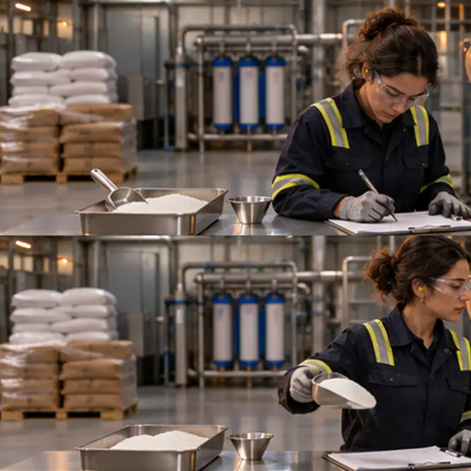
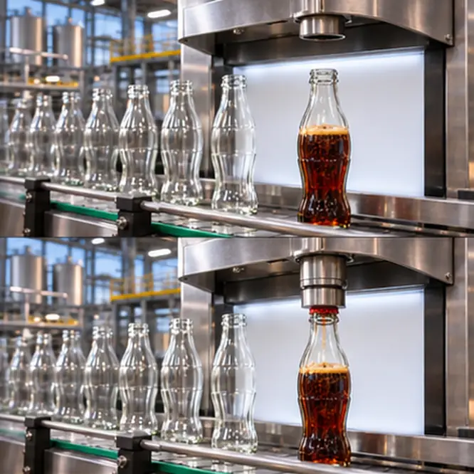
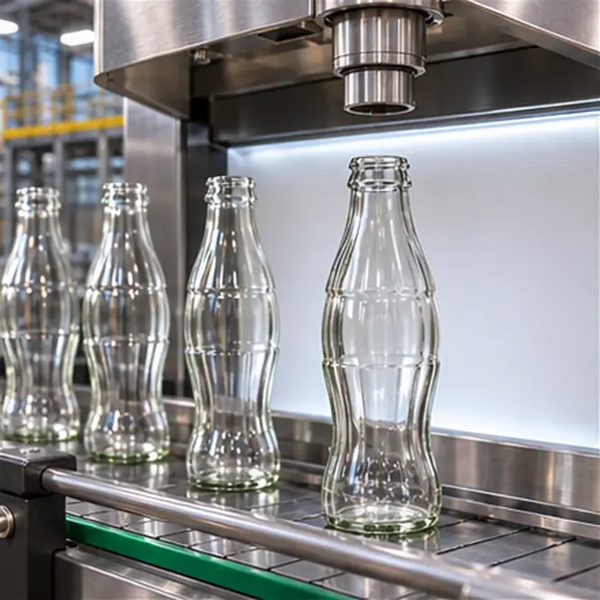
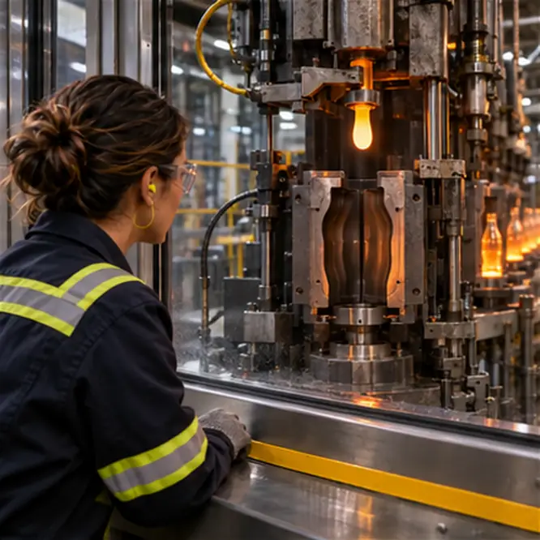
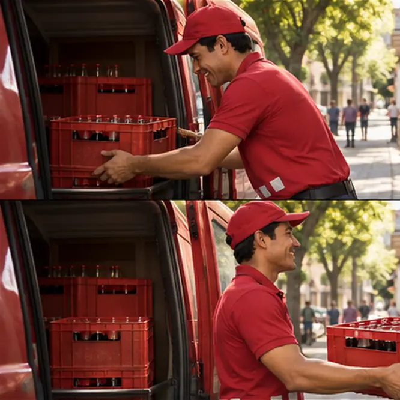
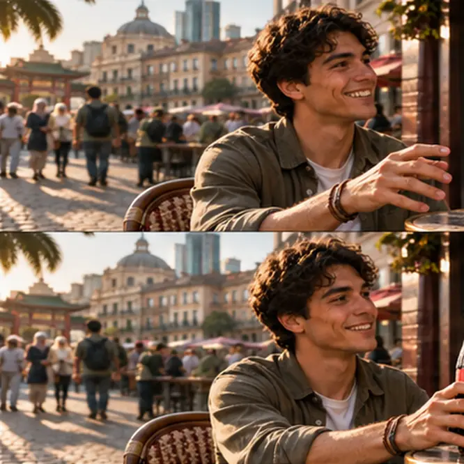

LENS 03 IN MOTION · GLOBAL VALUE CHAIN
Follow one bottle from inputs to a customer.
Seven stages show where different organisations add value in the Coca-Cola system: suppliers, the company’s brand and concentrate, local bottlers, retailers and customers [1] [2]. Scroll through the scene, or use the stage buttons.
Skip the journey ↓

01 · INGREDIENTS & PREPARATIONMany inputs begin to come together.
Suppliers provide ingredients and packaging materials; preparation turns measured inputs into a beverage base.

02 · BOTTLE PRODUCTIONPackaging takes shape.
Glass packaging is formed, cooled and prepared for the filling line.

03 · BEVERAGE PREPARATION & FILLINGConcentrate becomes a finished drink.
The company makes concentrates and syrups; local bottlers mix them into finished drinks, then bottle and package them [2].

04 · PACKAGING & QUALITYEach bottle is finished and checked.
Bottling contracts set product rules, so quality depends partly on partner performance [1] [5].

05 · LOCAL DISTRIBUTIONLocal partners move the product.
Independent bottlers package and distribute drinks within their territories [1].

06 · RETAIL & CUSTOMERThe journey reaches a local customer.
Retail and food-service outlets connect a global brand with a local market.
About these images: illustrative visuals of a generic production and bottling network, not photographs of a real Coca-Cola facility. Processes vary by market and bottler. Unmarked captions are our summary; numbered links point to the evidence.
THE WHOLE MAP, UP CLOSE
Start with the A1 mind map.
Pinch to zoom on your phone, or open the print-ready A1 file. The four lenses below unpack each branch in a larger, easier-to-read format, with the same numbered references.
COCA-COLA · GLOBAL BUSINESS STRATEGYA1 · LANDSCAPE